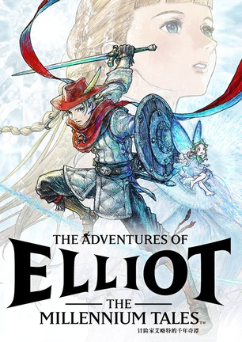
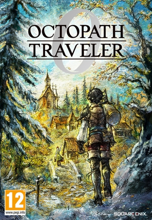

2026年6月 17 条
2026-06-29 06:37:19
 想看 抓特务
想看 抓特务
我也来走个面儿
2026-06-21 20:38:48
 看过 镖人：风起大漠 ★★★★☆
看过 镖人：风起大漠 ★★★★☆
国产武侠还真是不错，兵器的设定有点太刻意了，人手不同武器不说，主角还要一直换武器，不过总体来说真香
2026-06-17 22:05:39

2026-06-16 20:32:15
 看过 地球特派员 / Elio ★★★★☆
看过 地球特派员 / Elio ★★★★☆
用动漫的形式幻想了一个宇宙中的乌托邦，我还挺喜欢的，和《Project Hail Mary》的江星人一样；但另一方面总能想起来《三体》黑暗森林 :-(
2026-06-13 05:57:21
 看过 木乃伊 / Lee Cronin’s The Mummy ★★★☆☆
看过 木乃伊 / Lee Cronin’s The Mummy ★★★☆☆
印象里的木乃伊有很多会钻人的甲壳虫，堪称童年阴影。结果这一部基本上没有这种震撼的场面，所以感官上有些平淡，尤其是作为一个恐怖片来说。当然，另一方面，美国海外领事馆的寻找失踪人口的能力倒是战狼了一番，多少有些讽刺
2026-06-12 05:14:15

2026-06-12 05:09:15
2026-06-12 05:08:22

真买ns2了
2026-06-07 20:15:29
 看过 惊蛰无声 ★★★★☆
看过 惊蛰无声 ★★★★☆
看进度条都快结束了，还在想怎么把他给抓住，结果给我来个碟中谍好吧，剧情其实还可以，毕竟张艺谋。就是这个天网确实是有点牛了。
2026-06-06 20:54:20
想看 三体II：黑暗森林（下）
时间是排上了，就是感觉大概率会跳票啊，话说有AI了做这种科幻片不会快很多吗？
2026-06-06 20:49:12
 看过 挽救计划 / Project Hail Mary ★★★★☆
看过 挽救计划 / Project Hail Mary ★★★★☆
期待了很久，期待也非常大。没看过原作，从预告片到真实看影片没想到故事差别这么大，故事很精彩，脑洞也很大、很合理。最后的返航确实是升华了一下，江星人在建筑方面的造诣也太牛了吧。总体来说很精彩，视觉上也很过瘾，但是我希望更多硬核的内容在里面。
2026-06-06 16:52:09
想玩 剑星2 Stella Blade: Blood Rain (2027)
2026-06-06 15:32:01
来自哪个无人深“坑”的制作组
2026-06-06 08:38:43
想看 飞驰人生4
我都忘掉了林臻东为啥和张驰组队了，anyway 上一部贾冰瘦成那样真让我惊讶啊
2026-06-06 08:37:33
 看过 飞驰人生3 ★★★★☆
看过 飞驰人生3 ★★★★☆
剧情套路和前几部还是挺一致的，每次都是差不多的境地、然后自费冲冠军、然后车开到报废，结束。比赛场地选的很不错，是个合格的赛车片。其他的嘛，我觉得这个沐尘100别搞成国际比赛比较合理。
2026-06-06 06:13:16
想读 汽车为什么会跑
听说这本不错？但是只是青少年读物🌚
2026-06-05 14:02:52
 看过 河狸变身计划 / Hoppers ★★★★☆
看过 河狸变身计划 / Hoppers ★★★★☆
《阿凡达小格局动画版》，感觉河狸当主角的电影还没有别家吧！如果存在这么一个动物世界，那还挺不错的，很多脑洞大开的设定比如那个会飞的鲨鱼